Treatment options for tibial shaft fractures
A tibial shaft fracture is a fracture caused by high-energy injury, mostly from stairs, scooters or traffic accidents. If it is not treated properly, malunion can change the alignment and have a bad effect on the patient's life. For that reason, a tibial shaft fracture has to be treated properly at the right time. Let me go through seven patients I treated recently, case by case.
Case 1. A teenage girl who was hurt on stairs
She came in after her body weight pressed on the shinbone going down stairs and caused a fracture. Not only the tibia but the fibula was also fractured. In the image you can see a displaced fracture of the left tibia.
Because she was an adolescent who had almost finished growing, I used an intramedullary nail, which can treat the fracture without directly touching the fracture site. At 6 weeks after surgery I confirmed that alignment had been restored, and at 3 months the fracture line was almost invisible. In patients like this, a nail is a good choice.
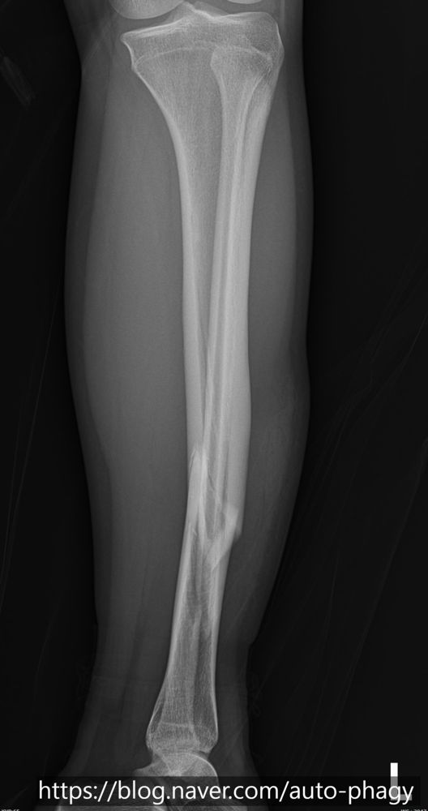
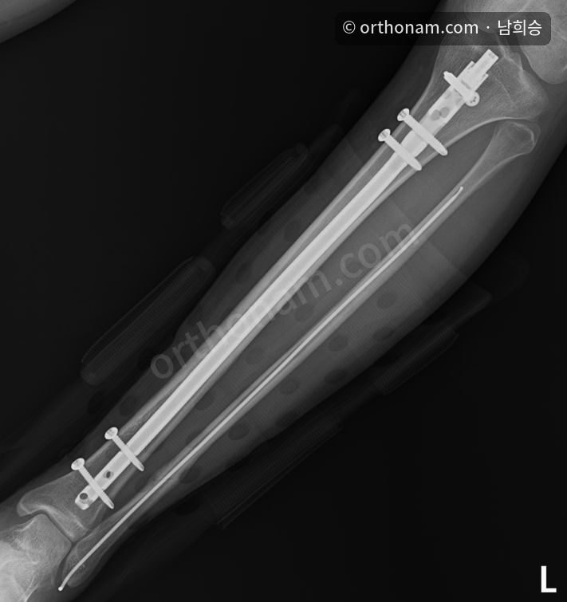
Case 2. A teenage boy who fell off a scooter
He fell while riding a scooter and broke both the tibial shaft and the fibula. I judged that without surgery the alignment would change and the outlook would be poor, so I operated.
On the AP image the difference in alignment may not look large, but on the lateral view you can tell that correcting the alignment helped. The fibula can be expected to act as a strut, so I did not fix it separately.
At 5 months after surgery union was well advanced, and at 8 months I confirmed union. The nail is planned to be removed at 1 year.
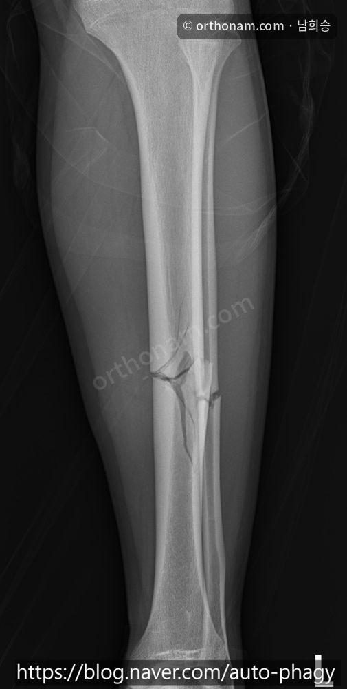
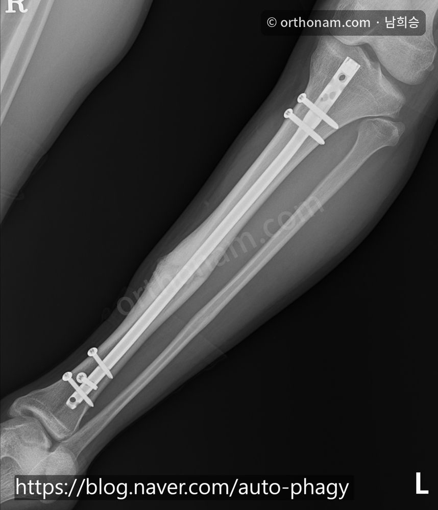
Case 3. A tall adult man in a motorcycle accident
A young man who had a tibial shaft fracture in a motorcycle accident. What was unusual was that this patient was over 190 cm tall, so his tibial shaft was longer than other patients'.
When I measured the length to the fracture site it was 390 mm. By AO standards the maximum length of tibial nail available is 330 mm, or 345 mm with the end cap. A nail is a good choice, but there is a limit to the instruments, so I performed plate fixation.
After reducing it as well as possible, I fixed it with screws above and below the fracture. A nail of more than 400 mm would have been a better choice, but this is a case treated with a plate because of the limits of the instruments.
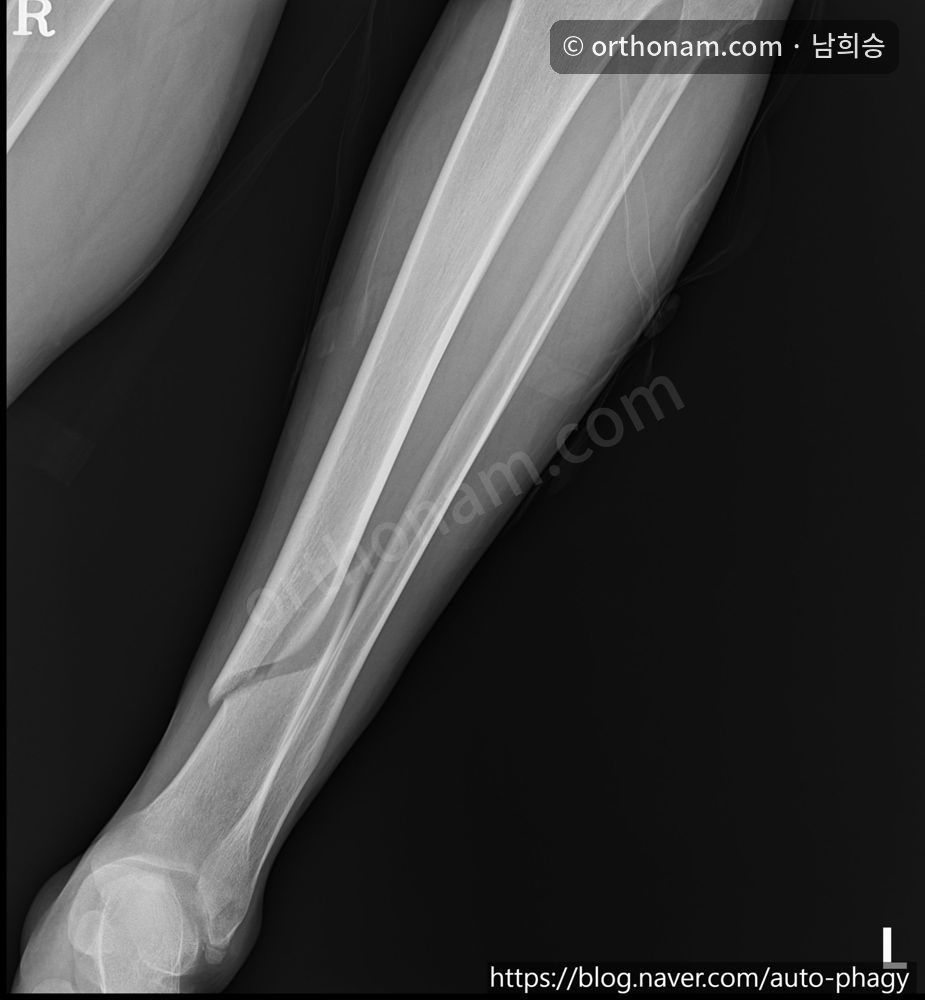
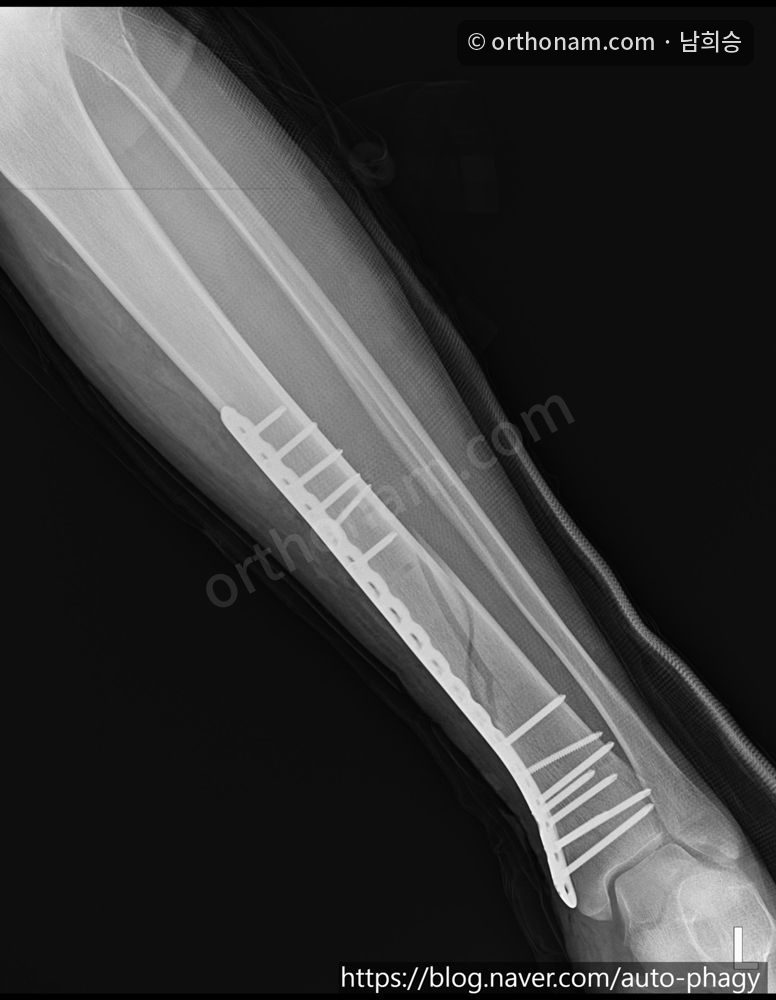
Case 4. A tibial fracture in a patient with after-effects of polio
There can be controversy in treating a patient who has had polio. This patient was active and loved exercise, so I went ahead with surgery.
Because of polio, the patellar tendon of the leg was poorly developed and the space below the patellar tendon (infrapatellar space) was small, so finding the entry point for the nail was very difficult. After surgery the fracture line is slightly visible but the alignment was well restored overall, and since the operation the patient exercises freely as he likes.
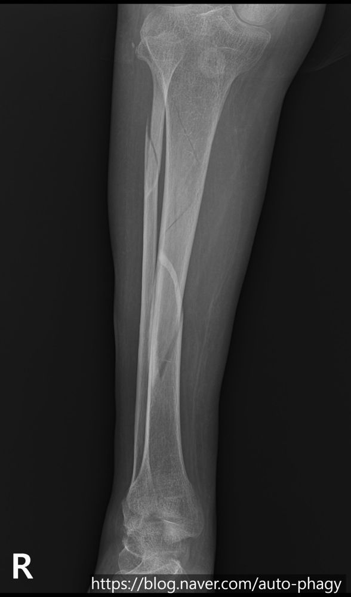
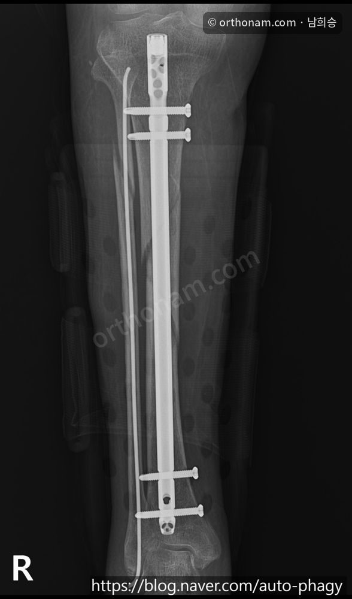
Case 5. A refracture at the site of an old fracture
A woman in her 50s. In her youth she was treated with an Ilizarov frame at another hospital for a tibial shaft fracture, and this was a case in which a fracture occurred again at the site that had healed in a hypertrophic union.
This patient is very difficult to treat. An intramedullary nail has difficulty passing because the inner diameter at the narrowest part (the isthmus) is too small, and if done wrongly there is a risk that the bone will split. For a plate, no product matches the contour of the bone, so it would have to be bent by hand in the operating room, which is also not easy. So I referred this patient back to the hospital where the Ilizarov treatment had been done so that she could be treated there.
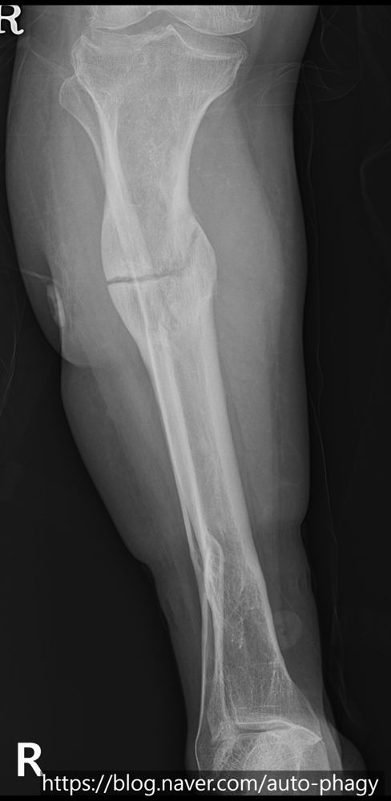
Case 6. A young woman who fell while skating
It was a typical unstable fracture with a large triangular fragment detached from the middle-to-lower tibial shaft, and a fibular shaft fracture was also present. Such fractures often result from a high-energy force, so not only the reduction but also the degree of soft tissue injury and the possibility of compartment syndrome must be carefully assessed.
I treated it with a tibial intramedullary nail, but could not insert it as it was. I made a small incision over the displaced part, reduced it and then used the nail. When I inserted the nail during surgery a varus deformity appeared, so I removed the nail, corrected the alignment, checked the alignment again and then inserted the nail to achieve the final alignment. At 6 weeks after surgery the fracture line was almost invisible.
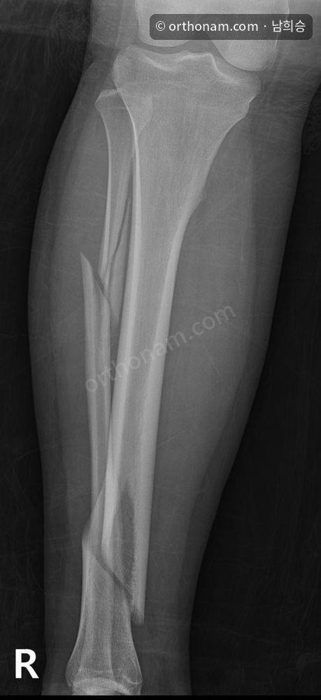
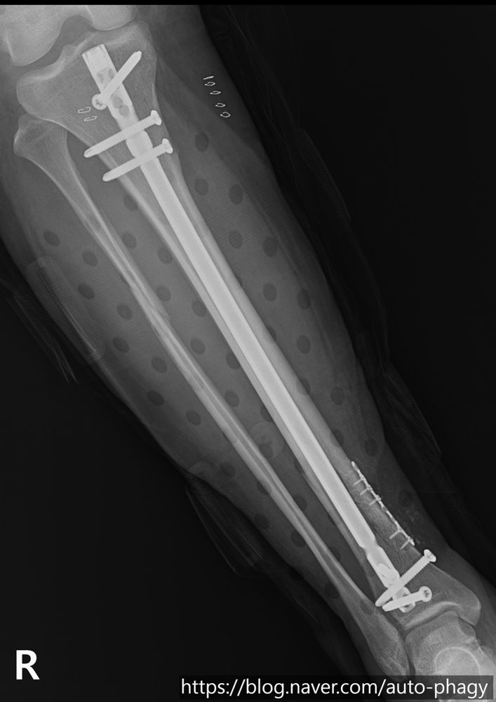
Case 7. A 40-year-old man whose leg was injured by rebar
The most notable feature of this patient was that the tibial shaft was impacted into the fibular shaft. This finding was also clearly visible on MRI, and attempts at reduction in the emergency room did not work well because the tibia and fibula were impacted.
I planned the surgery in two stages. First I reduced it and operated on the fibula, and the reduction went well so the alignment of the leg was nearly corrected. Ten days later I performed the second operation on the tibia. When the initial tibia and fibula fracture is severe, I stage the surgery in this order to prevent compartment syndrome of the leg and to put reduction first.
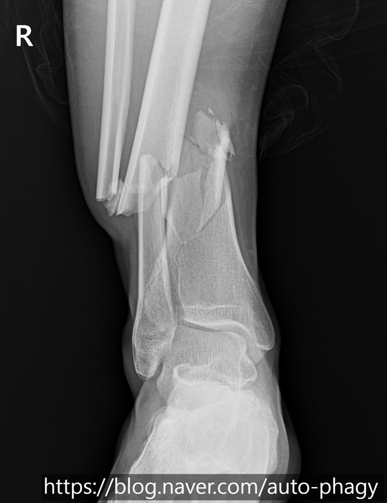
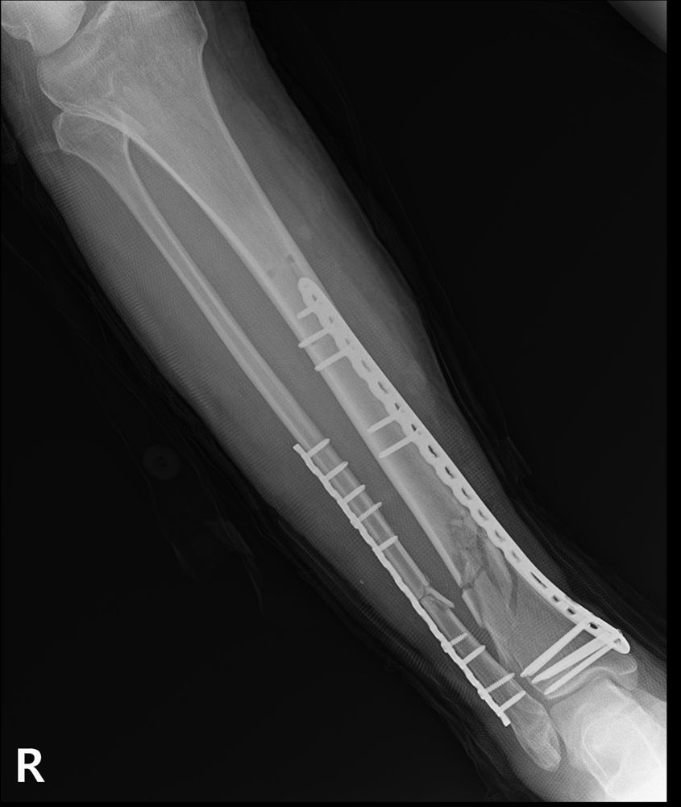
Summary
We looked at seven cases. Even fractures that look like the same site must be treated in completely different ways depending on the patient's age, the cause of injury (stairs, scooter, skating, traffic accident), anatomical characteristics (tall stature, polio and so on) and past surgery.
The most common and best treatment in the textbook is not the right answer for every patient. The case in which a plate was chosen because the patient was so tall that existing nails were too short, and the case in which, because past surgery had deformed the bone, another safest alternative was sought for the patient instead of a risky operation, show this.
A doctor's role in fracture treatment does not end with joining the broken bone. The heart of it is to design the most appropriate method by weighing each patient's situation and the limits of the instruments, and to restore correct alignment and help the patient return to daily life and the sports he or she loves.
Tibial shaft fractures mostly result from high-energy injuries. Please take care when riding a scooter or motorcycle, or when doing an unfamiliar sport (for example, skating). If you are in an accident, please see a specialist without delay and receive treatment suited to you at the right time. If you have questions, please write to doctornhs@naver.com.
This article is general information. Treatment can differ with the location and pattern of the fracture, your age and lifestyle, so please confirm through an examination. Click an X-ray to see a larger image.
References
- SPRINT Investigators; Bhandari M, Guyatt G, Tornetta P, et al. Randomized trial of reamed and unreamed intramedullary nailing of tibial shaft fractures. J Bone Joint Surg Am. 2008;90(12):2567–2578.
- Vallier HA, Cureton BA, Patterson BM. Randomized, prospective comparison of plate versus intramedullary nail fixation for distal tibia shaft fractures. J Orthop Trauma. 2011;25(12):736–741.
- McQueen MM, Gaston P, Court-Brown CM. Acute compartment syndrome: who is at risk? J Bone Joint Surg Br. 2000;82(2):200–203.